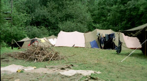
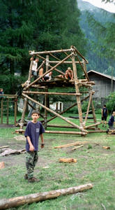
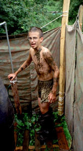

Sommerlager (7.7. - 21.7.01) der
Pfadi Alvier Buchs in Andeer
Unter dem Motto "Steinzeit" erlebten über 40 Mitglieder
der Pfadi Buchs ein spannendes Lager in Andeer.
Voller Vorfreude besammelten sich mehr als 40 Pfadfinder und Pfadfinderinnen der Pfadi Alvier
beim Bahnhof Buchs. Mit Zug, RhB und Bus reiste man dann ins Bündnerland, nach Andeer,
denn dort fand das diesjährige Sommerlager (SoLa) statt.

Auf einer Wiese neben dem Hinterrhein schlugen die Pfadis ihre Zelte auf und begannen gleich
nach ihrer Ankunft mit den allgemeinen Lagerbauten. Die ersten zwei Tage standen ganz im
Zeichen des Aufbaus: neben den sogenannten Fähnlibauten ("Fähnli" =
Gruppe von ca 7-10 Mitgliedern) wurden unter anderem auch die Lagerküche, das grosse
Ess- und Aufenthaltszelt, Turm, Dusche, Materialzelte und vieles mehr aufgebaut. Der dabei
einsetzende Regen störte die Pfadis kaum, vielmehr erfreute man sich an einer kleinen
Schlammschlacht, bei der man so richtig auf die kommenden zwei Lagerwochen eingestellt wurde.
Nachdem am Montag der grösste Teil der Lagerbauten bereits errichtet war, erkundeten die Teilnehmer mit Hilfe eines
Orientierungslaufes bei strahlendem Sonnenschein die nähere Umgebung. Am nächsten Tag, dem sogenannten Kulturtag,
wanderten die Buchser zur Viamala-Schlucht, welche sie tief beeindruckte. Den Nachmittag verbrachten die Pfadis in Andeer,
erkundeten das Dorf oder erfrischten sich im Freibad. Trotz des wieder einsetzenden Regens scharte man sich dann am Abend
ums Lagerfeuer um einige Lieder zum Besten zu geben.

Am Mittwoch fand die grosse Lagerolympiade statt: Am Morgen massen sich die Teilnehmer bei der Einzelolympiade
in Disziplinen wie Hammerwerfen, Nageln, Wassertrinken, Limbotanzen oder Guezliessen. Wie immer waren die Pfadis mit
Begeisterung dabei, so auch am Nachmittag, als man zur Fähnliolympiade überging. Gruppenweise versuchte man,
in Kirschsteinspucken, Einbeinhüpfen, Blachenvolleyball, M&M-Transport und mehr, die anderen Fähnlis zu
übertreffen. Am Abend feierte man die jeweiligen Sieger (Tartar; Fähnli Mustang) und verkroch sich dann
gemütlich in den Zelten, da es einmal mehr zu regnen begonnen hatte.
Der nächste Tag brachte ein weiteres Highlight des Sommerlagers: Den Hike. Bei einem Hike machen sich die
Fähnlis alleine auf den Weg in eine andere Ortschaft, um dort verschiedene Aufgaben zu lösen, selbständig
zu kochen und eine Unterkunft zu suchen. Dieses Jahr war aber der Hike mit einem Geländespiel passend zum Motto
"Steinzeit" verbunden. Als verschiedene Volksstämme der Steinzeit versuchten die Pfadis, das Überleben
der Menschheit zu sichern. Drei Tage und zwei Nächte lag es in den Händen der Steinzeitvölker, einen
codierten Text zu entschlüsseln, beim Geländespiel möglichst viele nützliche Dinge zu ergattern,
überlebenswichtige Kombinationen zu erstellen und wichtige Entscheidungen zu treffen - und so die Menschheit vor
dem sicheren Verderben zu retten!

Nachdem man sich am Sonntag bei einem Easyday wieder ein wenig ausgeruht und dabei die Rofflaschlucht nahe Andeer
besichtigt hat, verbrachten die Buchser den Montag in Chur.
Beim allgemeinen Badevergnügen im Freibad bereitete man sich auf die Zweitagestour vor. Wegen des sehr
ungünstigen Wetters hatte diese Wanderung bereits verschoben werden müssen, doch die Aufhellungen am Dienstag
erlaubten es den Pfadis dann wenigstens, eine grosse Tagestour durchzuführen. Je nach Alter oder körperlicher
Fitness marschierten die Buchser eine kleinere oder grössere Wanderung,beide Gruppen jedoch schlussendlich beinahe
jene Touren, die ursprünglich für die zweitägie Wanderung geplant gewesen waren!
Da es das Wetter am Mittwoch überhaupt nicht gut mit dem Pfadis meinte, konnten die Teilnehmer nach einem kleinen
Postenwettkampf den Nachmittag damit verbringen, aus einer Metallplatte Teller und Schalen zu klopfen:
Selbstverständlich nur mit Steinwerkzeug, wie es sich für Steinzeitvölker gehört!
Auch der drittletzte Lagertag brachte ein Highlight des Lagers, den Überlebenstag. An einem solchen Tag sind
die Fähnlis auf sich selbst gestellt und versuchen, ohne viele Hilfsmittel im Wald eine Behausung (notwendigerweise
wasserdicht) zu erstellen, über dem Feuer ihre Mahlzeiten zuzubereiten und Aufgaben zum Motto zu lösen.
Am Freitag musste man dann bereits wieder an die Abreise denken, Lagerbauten wurden abgebrochen und die persönlichen
Dinge auf dem ganzen Lagerplatz zusammengesucht. Am Samstag mussten dann nur noch die letzten Zelte zusammengepackt
werden und schon befand man sich wieder auf dem Weg nach Hause. Obwohl sich das Wetter die zwei Wochen nicht unbedingt
von seiner besten Seite gezeigt hatte, hatte das der guten Lagerstimmung keinen Abbruch getan, was die Lagerteilnehmer
beim Abtreten am Bahnhof Buchs ein letztes Mal lautstark und voller Begeisterung kund taten: Die Steinzeitvölker
hatten die Welt gerettet und freuten sich nun auf eine warme Dusche und ein gemütliches Bett - das Sommerlager 2001
wird so manchem im Erinnerung bleiben!
Panda